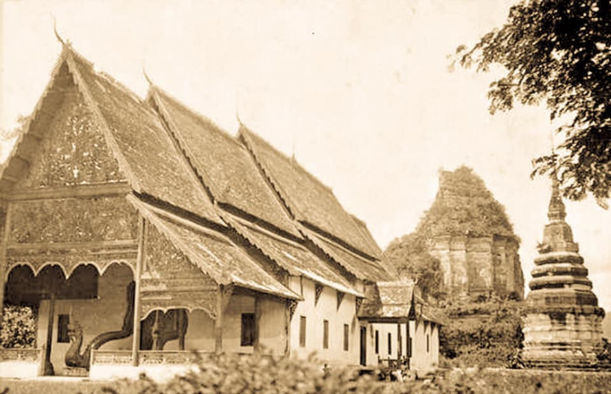

อาณาจักรล้านนา

อาณาจักรล้านนาเป็นอาณาจักรโบราณที่มีความสำคัญอย่างยิ่งต่อประวัติศาสตร์ไทย ตั้งอยู่ทางภาคเหนือของประเทศไทย มีศูนย์กลางอยู่ที่เมืองเชียงใหม่ ล้านนาเป็นแหล่งกำเนิดศิลปวัฒนธรรม ภาษา และประเพณีที่สืบทอดมาจนถึงปัจจุบัน
คำว่า “ล้านนา” หมายถึง “พื้นที่นาหลายล้านผืน” แสดงถึงความอุดมสมบูรณ์ของทรัพยากรธรรมชาติ ซึ่งเอื้อต่อการตั้งถิ่นฐานและการเกษตรกรรม
อาณาจักรล้านนาเคยมีความรุ่งเรืองทั้งด้านการเมือง ศาสนา และศิลปกรรม ถือเป็นหนึ่งในอาณาจักรสำคัญของเอเชียตะวันออกเฉียงใต้
อาณาจักรล้านนานับเป็นหนึ่งในอาณาจักรสำคัญของภูมิภาคเอเชียตะวันออกเฉียงใต้
เนื่องจากเป็นศูนย์กลางทางการเมือง ศาสนา และวัฒนธรรมของกลุ่มชนไทยวนมาเป็นเวลาหลายร้อยปี ล้านนามีบทบาทสำคัญในการเชื่อมโยงความสัมพันธ์ระหว่างรัฐต่าง ๆ
เช่น สุโขทัย อยุธยา ล้านช้าง พม่า และจีนตอนใต้ ทั้งในด้านการค้า การทูต และการแลกเปลี่ยนวัฒนธรรม
ล้านนายังเป็นแหล่งกำเนิดภูมิปัญญาท้องถิ่นที่มีเอกลักษณ์
เช่น ระบบเหมืองฝายในการจัดการน้ำ การจัดระเบียบสังคมแบบปันนา
รวมถึงศิลปกรรมและสถาปัตยกรรมที่สะท้อนความเชื่อทางพระพุทธศาสนาอย่างลึกซึ้ง